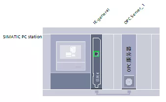
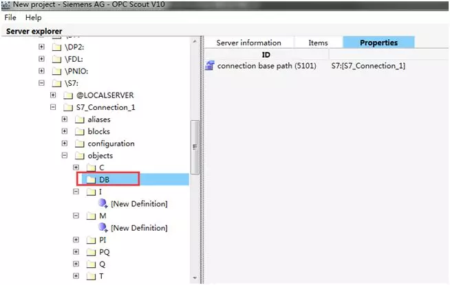
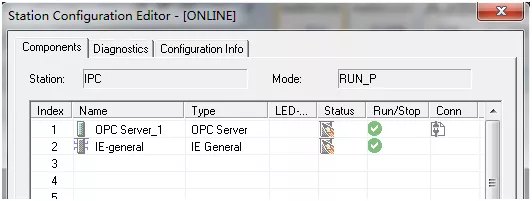
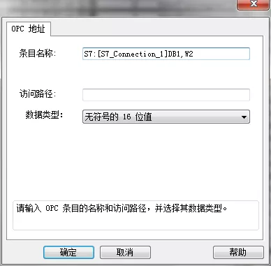
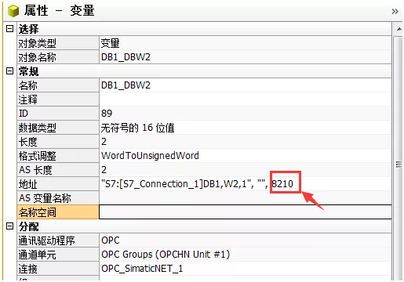

1.问题描述
WinCC自V7.2版本起，新增加了“SIMATIC S7-1200，S7-1500 Channel”通道，用于WinCC与 S7-1200/S7-1500 PLC之间的通信。此驱动只支持以太网通讯，基于 TCP/IP 协议。
而对于低版本的WinCC，通常采用的方法是：
STEP 7 (TIA Portal)中组态SIMATIC PC Station作为OPC SERVER（SIMATIC NET PC Software）与S7-1200 PLC建立通讯（如基于 ISO-on-TCP 的 S7 协议），WINCC通过OPC驱动访问服务。如何组态就不叙述，网上资料很多。

会遇到个问题，就是在OPC Scout中无法添加DB数据块条目。

2.了解一下OPC Scout
OPC Scout是什么，它是一个调试和测试OPC系统的支持工具，主要功能包括：
- 浏览和显示可用的OPC服务器
- 对于OPC UA，支持使用“发现”功能浏览对象
- 创建/保存连接要获取的对象
- 测试连接和对象
SIMATIC PC Station作为OPC SERVER和它没有太大关系。STEP 7 (TIA Portal)组态下载到PC Station后，运行Simatic OPC DA Server（进程opcdaserver.exe），WINCC即可建立OPC Client连接，添加变量访问S7-1200 PLC。

3.不同数据类型的DB变量对应的OPC条目格式
主要类型对应格式：
| 数据类型 | 条目格式 |
|---|---|
| BOOL | X0.0 |
| BYTE | B0 |
| WORD | W0 |
| DWORD | D0 |
| INT | INT0 |
| DINT | DINT0 |
| REAL | REAL0 |
如读取DB1.DBW2的OPC条目名称为：S7:[S7_Connection_1]DB1,W2，其中S7对应OPC SERVER与PLC通讯类型；S7_Connection_1对应连接名称；DB1为DB块编号，对应区域标识（包括M、I、Q）；W2中W为WORD，对应数据类型标识，2对应起始地址；对于数组还有数据长度。

然后把“属性-地址”中“8210”修改成“18”。包括OPC条目格式，这些都涉及到OPC协议一些核心内容，以后会分享些相关内容给大家。

这种通过绝对地址访问DB数据，需要取消DB的“优化的块访问”。
4.其它
关于把STEP 7 (TIA Portal)中变量导入OPC Scout（符号表中的符号包括在 OPC 服务器的系统数据中，可使用此方法代替上面方法访问DB）；OPC 服务器访问优化数据块，可查看TIA Portal帮助。若遇到什么问题可给我留言。
对于其它opc server如kepserverex ，也可直接在WINCC使用该opc server条目格式如Channel1.Device1.Q0.1访问PLC，省略在kepserverex建立变量条目。